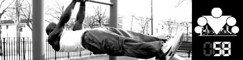

<==== Вернуться к оглавлению

Тема питья во время тренировки относится к разряду тех, по которым существует много разных мнений. Что касается лично меня, то во время тренировки я иногда пью воду, иногда не пью. Это зависит как от интенсивности тренировки и её продолжительности, так и от общего настроя, от температуры на улице, и ещё от того, хочется мне пить или нет. Стоит заметить, что раньше (пару-тройку лет назад) во время тренировок пил больше, а объём и интенсивность тренировок была ниже. Сейчас мне хочется сделать глоток воды только после действительно изнуряющего сета, например когда иду на максимум в подтягиваниях (цель - 30, сейчас делаю 20-25 спокойно). Так что вполне можно предположить, что есть связь между жаждой и уровнем подготовленности человека, вернее уровнем той нагрузки, которую он выполняет. И это логично, чем ты более подготовлен к нагрузке (приспособлен к ней), тем легче она даётся, тем меньше сил и энергии ты расходуешь.
Поскольку одних моих мыслей на эту тему явно недостаточно, предлагаю ознакомиться с мнением квалифицированного эксперта в данной области.
Светлана Руненко (доцент кафедры лечебной физкультуры и спортивной медицины ПМГМУ им. И.М.Сеченова), в своей
статье для журнала БГ затрагивает так же и вопрос питья во время тренировки:
В сутки нужно выпивать 1,5–2 литра жидкости, в день тренировки надо пить еще больше, особенно в жаркое время года. При выполнении интенсивной физической нагрузки организм теряет не только воду, но и электролиты, что приводит к серьезным нарушениям в работе многих органов и систем.
К сожалению, нередко сами тренеры запрещают пить воду во время нагрузок. Конечно, есть ситуации в спорте высших достижений, когда большой объем жидкости не рекомендован для однократного приема, но не об этих случаях идет речь. На тренировках пить нужно обязательно: каждые 15–20 минут — 100–150 миллилитров жидкости.
Запрет на питье часто ассоциируется с эффективностью похудения. Вспоминают, что жир — это 90% воды и якобы, чем меньше пьешь, тем быстрее похудеешь. Это такая же иллюзия, как надежда на похудение человека, истекающего потом в сауне. Истинного похудения нет — происходит временное обезвоживание. Количество жировых клеток от дегидратации не меняется. Не надо себя мучить. Даже если пить не хочется, это нужно делать. Невосполненный дефицит жидкости приводит к множеству проблем: резкому снижению артериального давления, нарушениям ритма, повышению вязкости крови, а следовательно, и к опасности тромбообразования, повышению концентрации вредных веществ в крови и т.д.
Для восполнения потерь жидкости не обязательны какие-то специальные напитки — вполне подойдет вода средней минерализации.
На мой взгляд это довольно хороший ответ, хотя и оставляющий много белых пятен. В частности мне лично непонятно зачем пить, если ты не хочешь пить, и если не было особого потоотделения, и на улице не так жарко. Если говорить о питье во время тренировок, то они тоже могут быть очень разными, а это означает что и подход к потреблению воды будет отличаться. Общий совет, который можно дать совершенно точно - НИКОГДА НЕ ПЕЙТЕ БОЛЬШИЕ ОБЪЁМЫ ЖИДКОСТИ за раз. Во-первых, во время тренировки вам может захотеться выпить больше воды, чем на самом деле нужно именно из-за ощущения, что в горле пересохло. Во-вторых, большой объём жидкости может создать некомфортное ощущение тяжести в желудке, что будет мешать дальнейшей тренировке. В-третьих, большой объём воды создаст дополнительную нагрузку на сердце. Поэтому следуем приведённой выше рекомендации и во время тренировки небольшими глотками утоляем жажду и освежаемся.
По приведенным выше причинам в нашей программе я бы рекомендовал делать не более 1-2 глотков воды во время 60 секундного отдыха между подходами, да и то, только для того, чтобы "промочить" горлышко.
Ещё один совет по балансу жидкости от Сергея Илюкова, спортивного врача, работающего со спортсменами циклических и игровых видов спорта. Согласно рекомендации, нужно обращать внимание на цвет мочи. Нормальный цвет - светло-соломенный. Чем темнее моча, тем сильнее идет нагрузка на почки, что среди прочего означает и обезвоживание.
======> День 59. Зачем нужно спортивное питание?